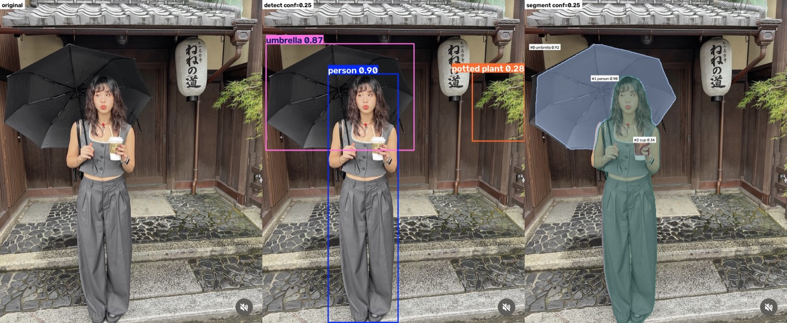
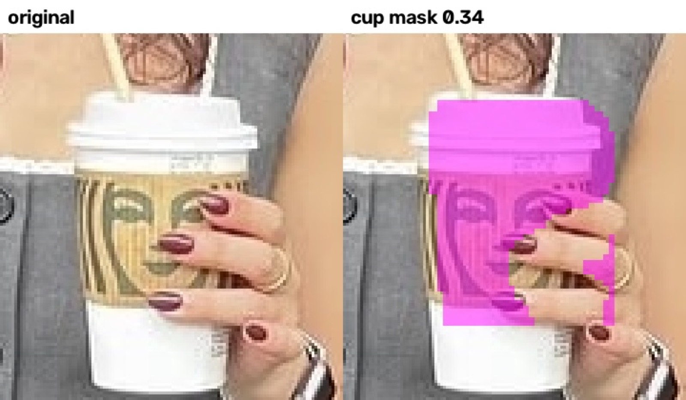
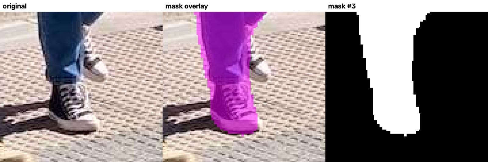
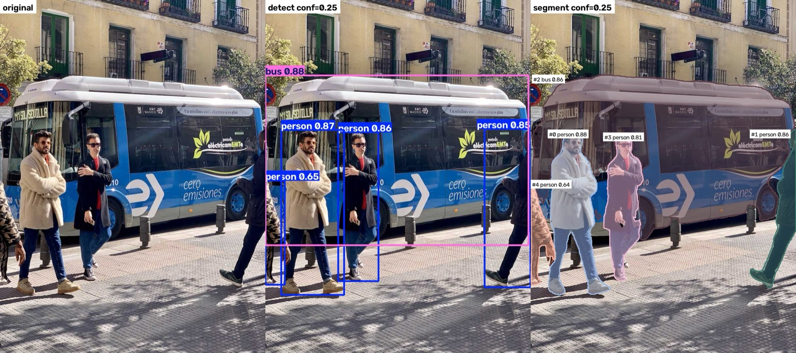
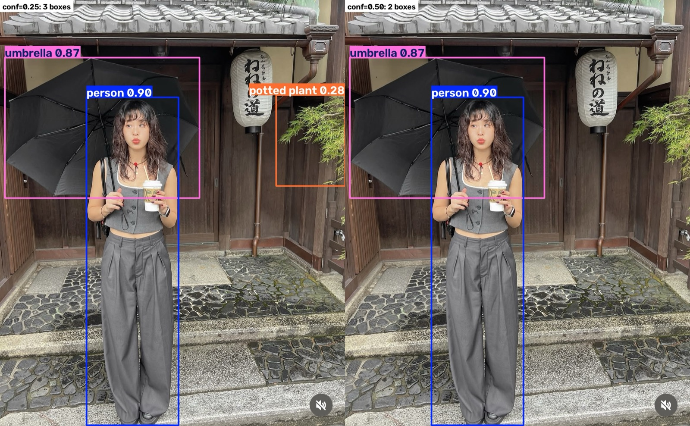

조립 라인 사진 한 장에 팀마다 다른 답을 원합니다. "사진을 분석해 주세요"를 이렇게 풀어 쓰면, 어떤 출력이 필요하고 어떻게 검수할지가 보입니다.
품질팀흠집이 어디인가요?박스 좌표 + 이름 + 점수
안전팀안전모 미착용이 몇 명인가요?박스를 센 개수
설비팀마모 면적이 얼마나 늘었나요?마스크 픽셀 면적
홍보팀비슷한 사진을 새로 만들어 주세요생성 이미지 (이번 범위 밖)
과제 A는 앞의 세 팀에 해당합니다. 박스(위치·개수)와 마스크(경계·면적)를 한 사진에서 함께 뽑고, 사람이 원본과 대조합니다.
1/6
박스와 마스크는 다른 질문에 답한다
교안
"어디 있는가"에는 박스, "어디까지인가"에는 마스크가 필요합니다. 박스 안에는 배경이 들어가므로 면적을 재는 데는 맞지 않습니다.

자기 사진, conf 0.25. 왼쪽부터 원본, 박스(사람·우산·나뭇가지), 마스크(우산·사람·컵).
박스 넓이 중 실제로 칠해진 비율 seg.json · mask_fill_of_box
버스 사람 #1
0.31
버스 사람 #4
0.45
버스 사람 #0
0.51
우산
0.54
버스 사람 #3
0.60
버스
0.62
컵
0.68
내 사진의 사람
0.68
1.00이면 박스가 대상과 딱 맞는 것입니다. 0.31이면 박스로 면적을 쟀을 때 실제보다 약 3배 크게 나옵니다.

컵 마스크는 뚜껑과 홀더만 칠했고 아래쪽 흰 몸통은 빠졌습니다. 쥐고 있는 손가락은 오히려 칠해졌습니다.

버스 사진의 뒷발: 앞발 운동화는 마스크 안이지만 뒤로 든 흰 운동화는 밖입니다. 박스 안에는 들어 있습니다.
박스가 잘 나와도 경계까지 맞는 건 아닙니다. 교안의 "도장 손상 면적으로 보험금 정하기"였다면 이 마스크로는 틀린 금액이 나옵니다.
2/6
좌표는 원본으로 돌아가는 길이다
교안
재무팀 표의 숫자마다 그 값이 나온 페이지와 위치를 연결하면, 검토자가 의심스러운 곳에서 바로 확인을 시작할 수 있습니다.
// outputs/yolo/bus/conf0.25/det.json
{
"class":"bus",
"score": 0.8806,
"xyxy": [0.0, 230.5, 803.1, 750.5]
}
// 사진 가로 810px 중 0 ~ 803
// → 버스가 화면 양쪽 끝에서 잘려 있음

JSON의 좌표가 가운데 그림의 분홍 bus 박스입니다. 그림으로 보던 결과가 다른 프로그램도 읽을 수 있는 데이터가 됩니다.
README의 대조 기록에 "x 936~1170, y 323~631"처럼 원본 위치를 함께 적은 이유가 이것입니다.
3/6
임계값을 올리면 오탐과 미탐이 맞바뀐다
교안 · 안전모 예시
임계값을 올렸더니 조명 오탐 2개와 실제 안전모 2개가 함께 사라졌습니다. 정밀도는 0.8 → 1.0으로 올랐지만 재현율은 0.8 → 0.6으로 내려갔습니다. "화면은 깔끔해졌는데 놓친 대상은 늘었다"는 것입니다.

왼쪽 conf 0.25는 박스 3개, 오른쪽 0.50은 박스 2개. 오른쪽 위 나뭇가지의 "potted plant 0.28"이 사라졌습니다.
detection 모델 기준
conf 0.25
conf 0.50
맞게 찾음 (TP)
사람 0.90우산 0.87
사람우산
오탐 (FP)
나뭇가지 → potted plant 0.28
없음
미탐 (FN)
컵 (0.18이라 기준 미달)가방
컵가방
정밀도 = TP ÷ (TP+FP)
2 ÷ 3 = 0.67
2 ÷ 2 = 1.00
재현율 = TP ÷ (TP+FN)
2 ÷ 4 = 0.50
2 ÷ 4 = 0.50
segmentation 모델에서는 더 선명합니다
0.25에서 찾던 컵(0.34)이 0.50에서는 사라집니다. 나뭇가지 오탐을 지우는 기준선이 실제 컵도 같이 지웁니다. 교안의 안전모 예시와 같은 모양입니다.
버스 사진은 아무것도 안 바뀌었습니다
박스 5개가 모두 0.65 이상인 쉬운 사진이라, 0.25와 0.50 결과가 같습니다. 예제 사진만 보면 "임계값은 아무거나 괜찮다"고 잘못 결론 내리게 됩니다. 과제가 자기 사진을 따로 넣게 한 이유입니다.
정답 라벨이 없어서 TP·FP·FN은 원본을 눈으로 대조해 판단했습니다.
실험
내 사진으로 임계값을 직접 움직여 보기
모델이 conf 0.01까지 내놓은 후보를 전부 저장해 두었습니다(detection 16개, segmentation 9개). 하나하나 원본과 대조해 맞음·오탐·중복을 붙였습니다. 슬라이더를 움직이면 기준선 위에 남는 후보만 그려지고, 정밀도와 재현율이 바로 다시 계산됩니다.